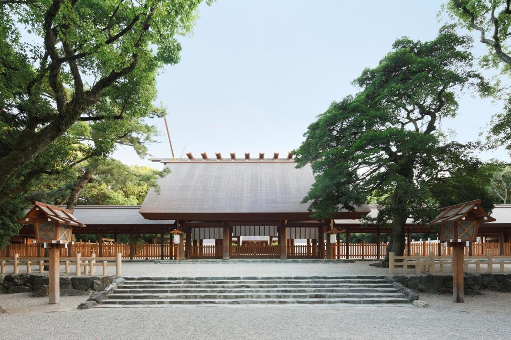

名古屋港水族館
日本最大級のプールを誇る名古屋港水族館は、迫力満点のイルカパフォーマンスやシャチの飼育で知られる人気スポットです。世界各地の海洋生物をテーマごとに展示し、海の生命の美しさと神秘を体感できます。
このサイトでは，名古屋を訪れたらぜひ立ち寄ってほしい3つのスポットを紹介する．
日本最大級のプールを誇る名古屋港水族館は、迫力満点のイルカパフォーマンスやシャチの飼育で知られる人気スポットです。世界各地の海洋生物をテーマごとに展示し、海の生命の美しさと神秘を体感できます。

創建1900年以上といわれる熱田神宮は、三種の神器のひとつ「草薙神剣(くさなぎのみつるぎ)」を祀る、 伊勢神宮に次ぐ格式を持つ神社です。約6万平方メートルの境内は大楠をはじめとした緑に包まれ、 都心とは思えない静けさの中で参拝できます。

ギネス記録を持つ世界最大級のプラネタリウム「Brother Earth」を擁する体験型科学館です。マイナス30度の極寒体験や高さ9mの人工竜巻など、五感を使って科学の不思議と楽しさを学べます。